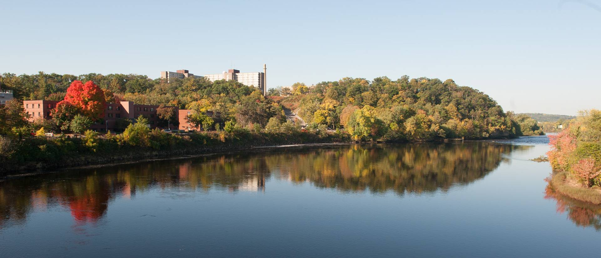
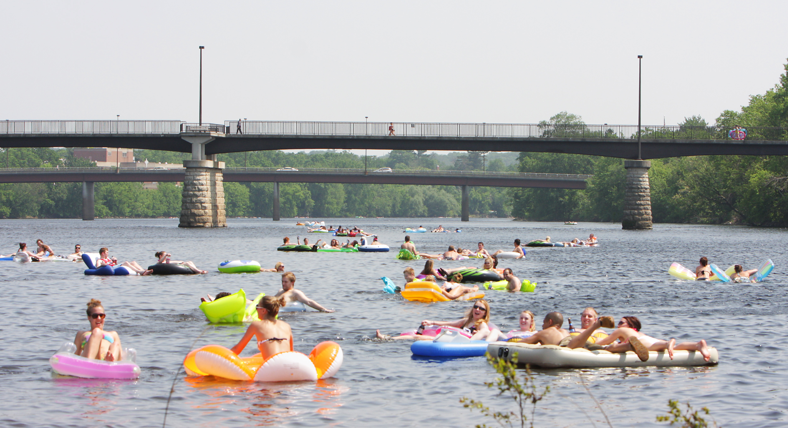

Chippewa River


Rich in history and senic beauty the Chippewa River is navigable for most of its length. The 40 mile stretch bellow the dam at Eau Claire is a popluar for kyaking, tubing, and canoeing. The river is the centerpiece of the Upper Chippewa River Basin. The Flambeau, Jump, Elk, Thornapple, and Couderay Rivers all feed into the Chippewa River. The Chippewa River has rich logging history. The entire basin was logged from the 1850's to about 1906. The river provided a waterway to float timber from northern Wisconsin to the Mississippi River.